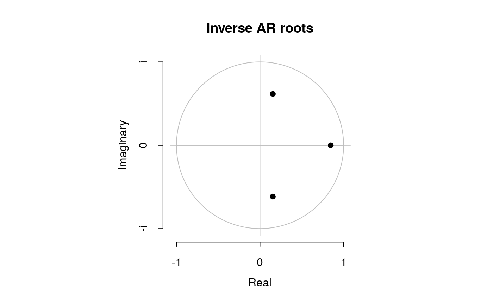
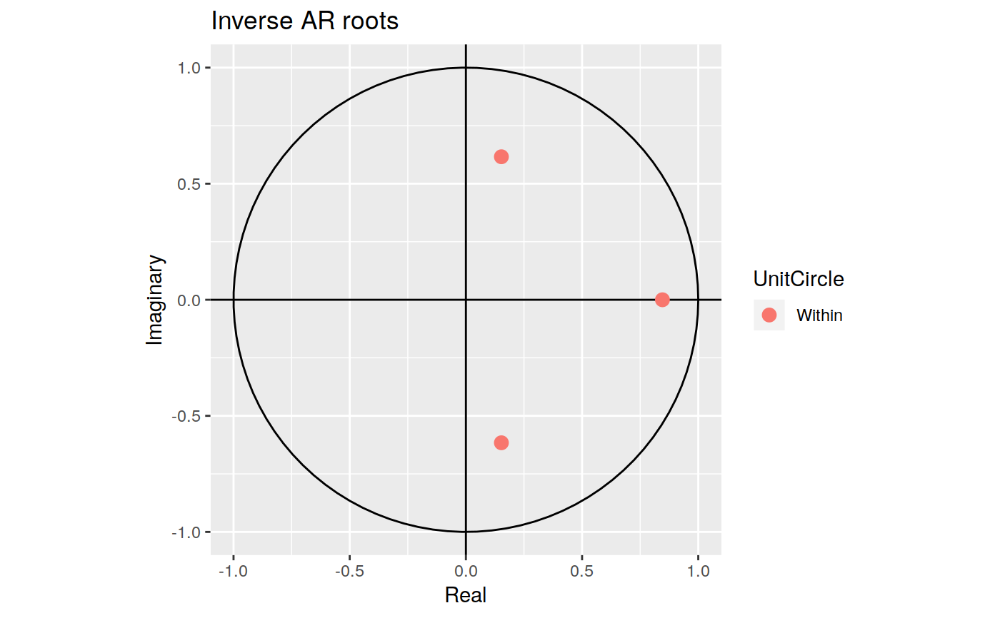
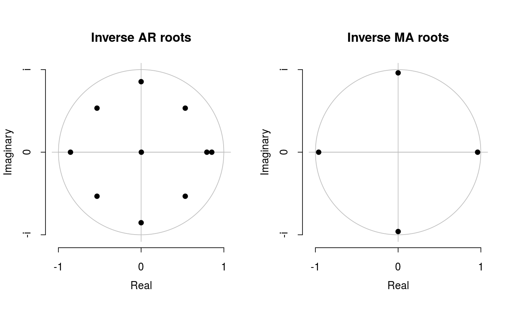
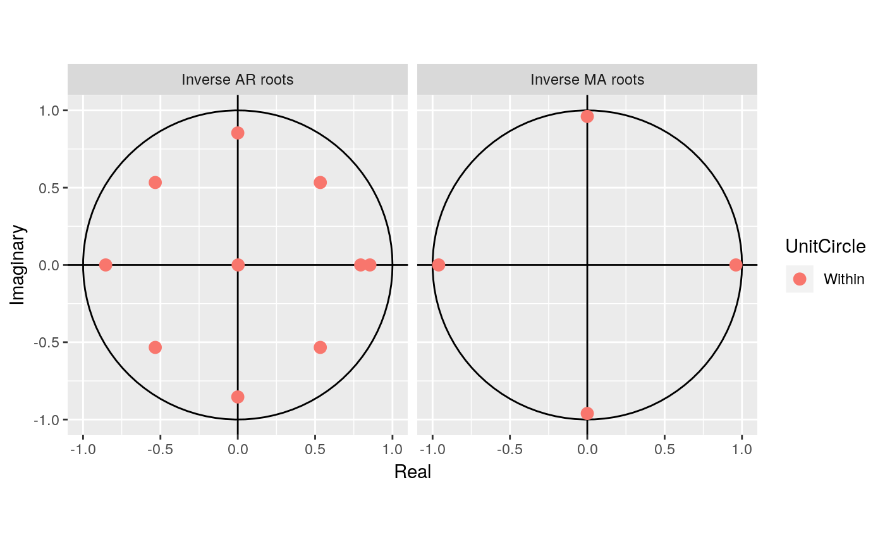
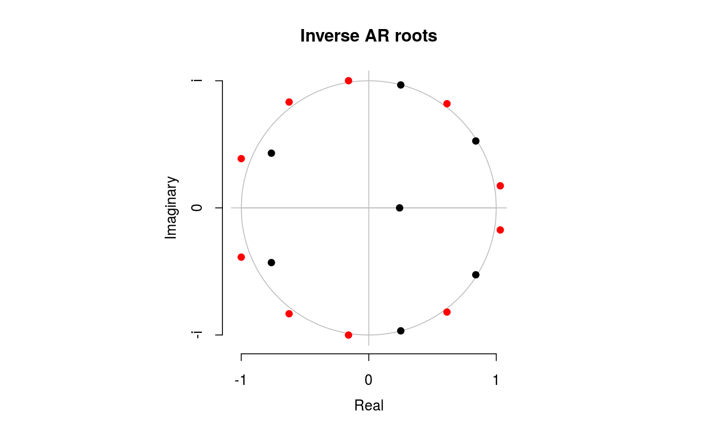
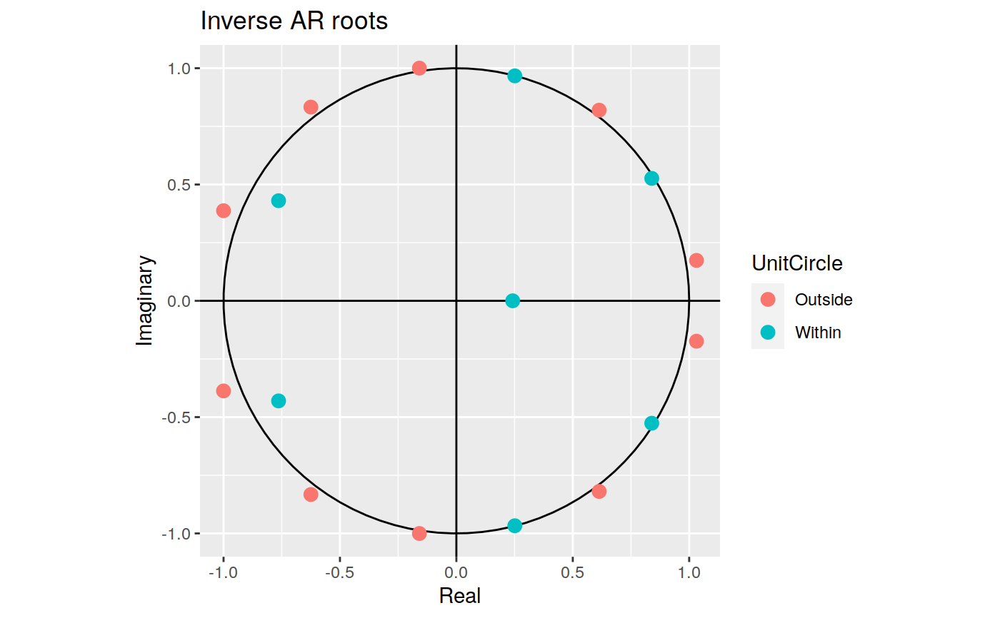

Produces a plot of the inverse AR and MA roots of an ARIMA model. Inverse roots outside the unit circle are shown in red.
# S3 method for Arima plot(x, type = c("both", "ar", "ma"), main, xlab = "Real", ylab = "Imaginary", ...) # S3 method for ar plot(x, main, xlab = "Real", ylab = "Imaginary", ...) # S3 method for Arima autoplot(object, type = c("both", "ar", "ma"), ...) # S3 method for ar autoplot(object, ...)
| x | Object of class “Arima” or “ar”. |
|---|---|
| type | Determines if both AR and MA roots are plotted, of if just one set is plotted. |
| main | Main title. Default is "Inverse AR roots" or "Inverse MA roots". |
| xlab | X-axis label. |
| ylab | Y-axis label. |
| ... | Other plotting parameters passed to |
| object | Object of class “Arima” or “ar”. Used for ggplot graphics (S3 method consistency). |
None. Function produces a plot
autoplot will produce an equivalent plot as a ggplot object.
autoplot(fit)autoplot(fit)plot(ar.ols(gold[1:61]))